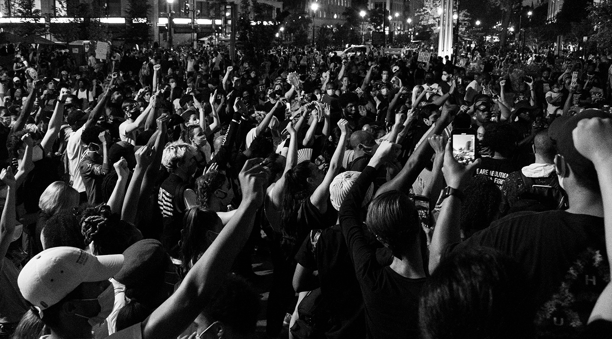

The police officer who murdered Jaahnavi Kandula has not faced any consequences. The case is under investigation by SPD’s Traffic Collision Investigation Squad but the offender Daniel Auderer was joined back to office two days after Jahnavi was fatally hit.
Auderer should not be allowed to continue policing after this incident.
Recources to support the justice of Jaahnavi Kandula
Support the movement
Accountability Petition
Justice for Jaahnavi
Terminate Daniel Auderer